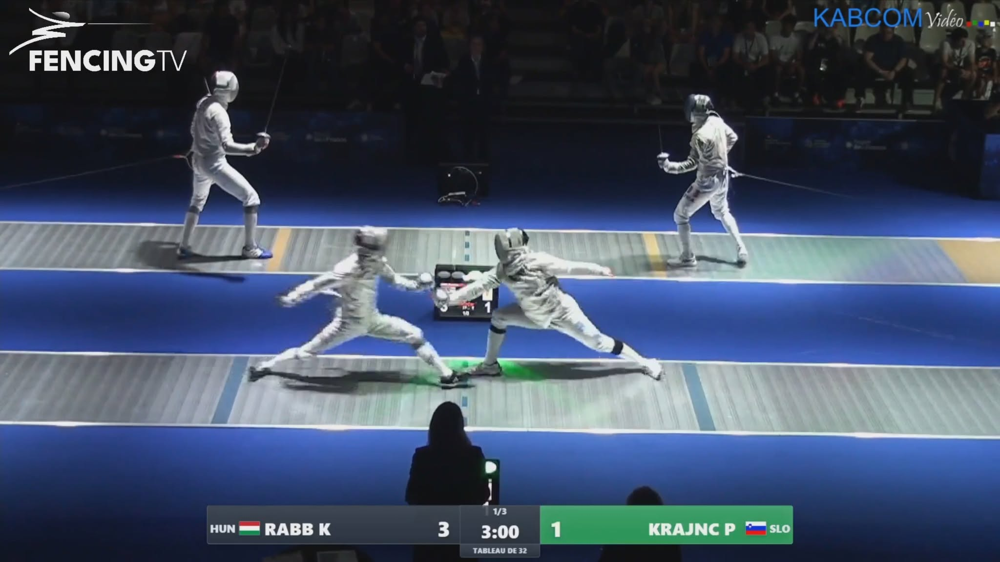
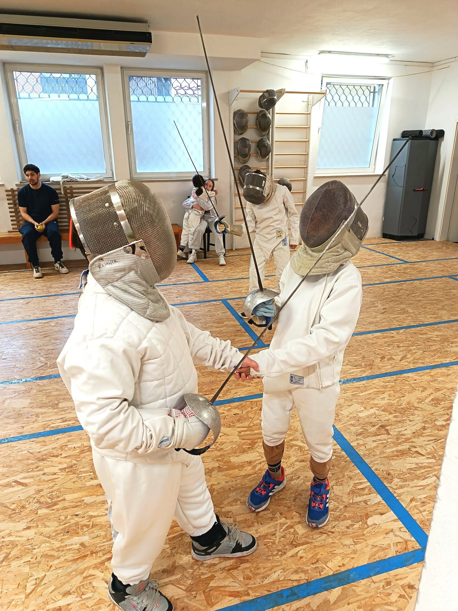
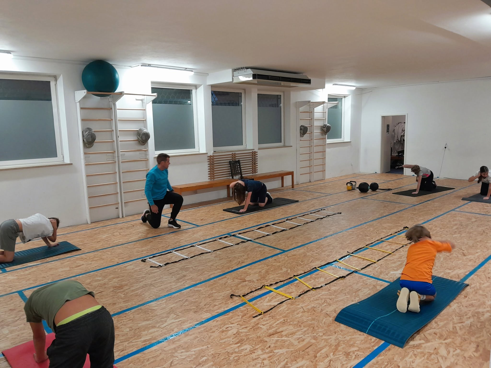
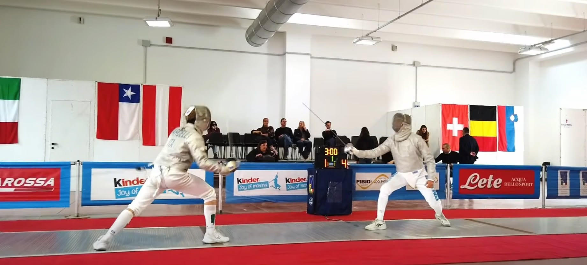
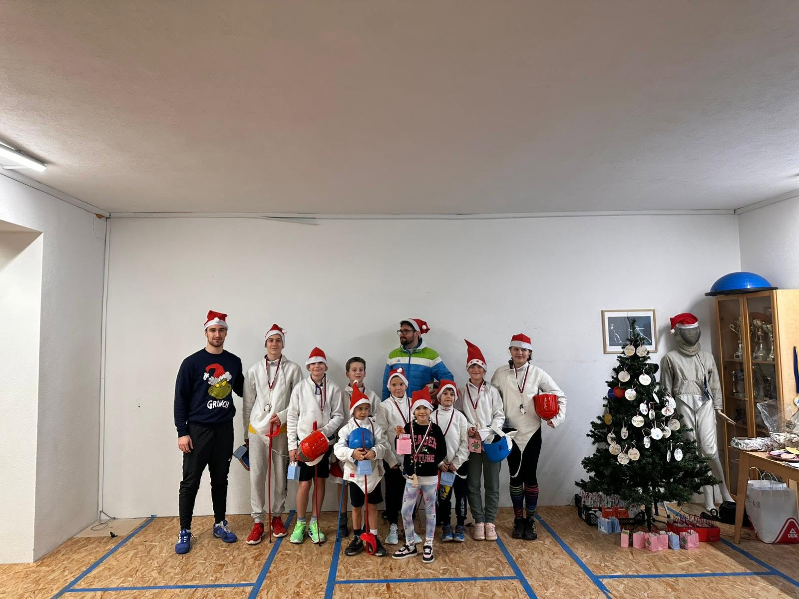

Sezona 2026/27
Sabljaški klub Kamnik
Vsak boj se začne s prvim korakom naprej.
Sabljaški klub Kamnik je športni klub, namenjen učenju in treningu sabljanja v Kamniku. Klub za začetnike, rekreativce in tekmovalce — vadimo skozi vso sezono.

Program
Izberi svojo pot
Izkušeni trenerji
Vodeni treningi za vsako raven, od prvega koraka do tekmovanj.
Oprema na voljo
Za prve treninge ni treba imeti lastne opreme — na voljo je klubska.
Odprta vadba
Novi člani so dobrodošli skozi vso sezono, ne le jeseni.
O klubu
Sabljaški klub Kamnik
Sabljaški klub Kamnik že od leta 2015 goji olimpijsko sabljanje pod izkušenim vodstvom. V klubu nudimo treninge za začetnike in rekreativce vseh starosti, hkrati pa vzgajamo tekmovalce, ki uspešno nastopajo na mednarodnem nivoju.
Dosežki in prepoznavnost
- Naš član Peter Krajnc redno nastopa na najvišji ravni – svetovno prvenstvo (Hong Kong, 2026), evropsko člansko prvenstvo (Antony, 2026 – 26. mesto, najboljši rezultat kluba v 10 letih delovanja), Grand Prix Tunizija, mednarodni turnirji v Rimu, na Dunaju, v Foggii in drugod.
- Mladi sabljači kluba (Nehir Vardar, Tilen Zore, Žan Golub, Eva Kuhar, Živa Bizjak in drugi) uspešno nastopajo na mednarodnih turnirjih (Poljska, Madžarska, Nemčija, Avstrija) in v slovenski reprezentanci na mediteranskih in evropskih prvenstvih.
- Klub redno osvaja naslove državnih prvakov v več kategorijah (U10, U12, U14, člani) in je leta 2026 gostil državno prvenstvo v Kamniku.
- Dva člana, Neja Lebeničnik in Tilen Zore, sta prejela priznanje Občine Kamnik za športne dosežke (2025).
- V klubu izobražujemo tudi lastne trenerje – zadnje leto sta licenco pridobila dva nova trenerja, klubu pa se je pridružil tudi športni pedagog in kondicijski trener.
- Skozi šolske krožke in športne dneve približujemo sabljanje otrokom po osnovnih šolah v okolici.
- Tradicionalne Božične borbe so leta 2025 dosegle svojo 10. obletnico, klub pa aktivno sodeluje tudi s partnerskimi klubi v tujini (Beljak, Trst, Pečuh).
Urnik
Treningi v Kamniku
športnikov
športnikov
državnem prvenstvu
Galerija
Slike s steze



Povezani z
Prvi korak
Pripravljen/a na prvi trening?
Prva dva treninga sta za nove člane brezplačna. Za trenutne pogoje preveri pri klubu.
Pokliči ali
napiši
Pridi na prvi
trening
Postani član
kluba